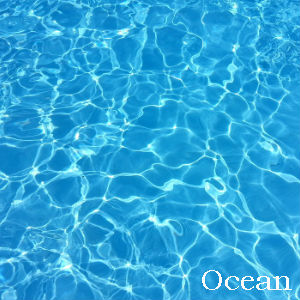

Art and the Great Artists sourrounds us. "Three Plus One" is intended to highlight just that in its outlook.
It is not meant to address anyone one class of individual or artist.
There is an apparent artist contained in all individuals. That artist may or may not be stirred or explored for a lifetime.
This universe showcases the elements that is available to all that gives the artist life.
The ability to create art and the elements of life.
These elements can invoke the five senses giving a sensory-expereince.
Perhaps, giving even an invisible, innate, other-worldly expereince.
One that ranges from gentle and beautiful to violent, grotesque and even macabre.
However expressed the elements showcase themselves as inspiration, revealed perceptions, the true selves of the artist-individuala learned and visibly expressed.
This website is intended to be "a work of art".
Instead of visiting an art gallery at a museum you visit the world wide web.
A virtual place in cyberspace that rivals any art gallery.
Which in itself can be defined as a work of art.
Here works of art from the whole world and known universe are displayed to the whole world.
At times the universe and its visible elements can be counted in threes such as 'sun, moon, stars'.
These three have a collective visible existence and can be seen suspended in the open air from the surface of the earth.
They exist individually and again collectively as part of a larger whole.
Their existence occupies a part of the universe refer to as space.
However, they are also counted as part of the known universe where life that is known exists.
There are also other interwoven elements of threes naturally existing or creature made.
All of which exist with purpose, operating within their individual purpose and at times with a shared or common purpose.
They stand alone yet co-exist as part of a whole.
The universe, the world, can essentially be viewed as a work of art for all people of all time.
The elements of the universe exist for all.
and from time memorial sustained all of life from birth to dying.
Till they return once more to the elements.
The universe and its elements do not depend on its inhabitants which in this work of art are referred to as 'plus one' to exist.
However, the plus one have a total dependence for existence and being on the universe.
Whatever has been made, has been made to fit the universe. Plus One is incomplete in existence when not in the universe that sustains its existence.
As you visit these pages, they are intended to tell a story. A story titled 'Three Plus One'. The One is the common denominator of all the threes.
Thank you for visiting this 'work of art'.

